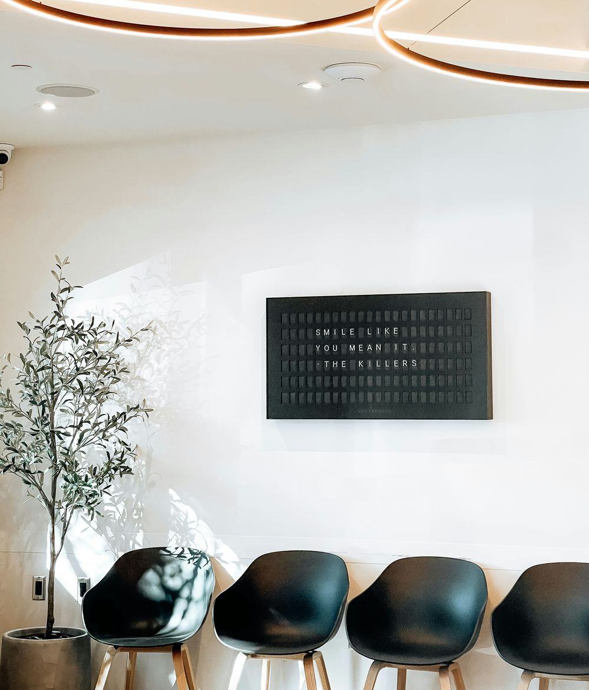
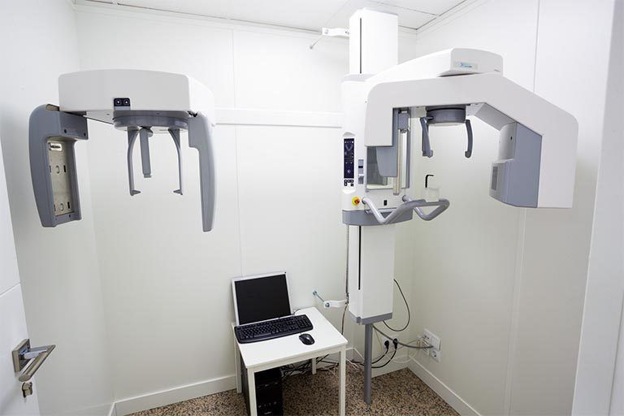

Healthy Smiles: tu centro odontológico en Buenos Aires
Cuidamos tu sonrisa con atención personalizada, tecnología moderna y un equipo de profesionales que te acompaña en cada etapa del tratamiento.

Quiénes somos
Somos un centro odontológico fundado en 2015 en la Ciudad de Buenos Aires. Atendemos a adultos y niños, con un enfoque preventivo y un trato cercano.
Tratamientos destacados
- Limpieza dental
- Ortodoncia
- Implantes
- Blanqueamiento
- Odontopediatría
- Endodoncia
Por qué elegirnos
- Profesionales especializados y en formación constante.
- Equipamiento de última generación.
- Turnos rápidos y horarios amplios.
- Atención con las principales obras sociales y prepagas.
Conocé el consultorio

Sala de espera

Consultorio de atención

Radiografía digital
Preguntas frecuentes
Sí, trabajamos con OSDE, Swiss Medical, Galeno, Medifé y Omint. También atendemos de forma particular.
Recomendamos un control y una limpieza cada seis meses para prevenir caries y problemas en las encías.
Sí, nuestra odontopediatra atiende a chicos desde el primer año de vida, en un ambiente pensado para ellos.
Podés llamarnos, escribirnos por mail o completar el formulario de la página Turnos.